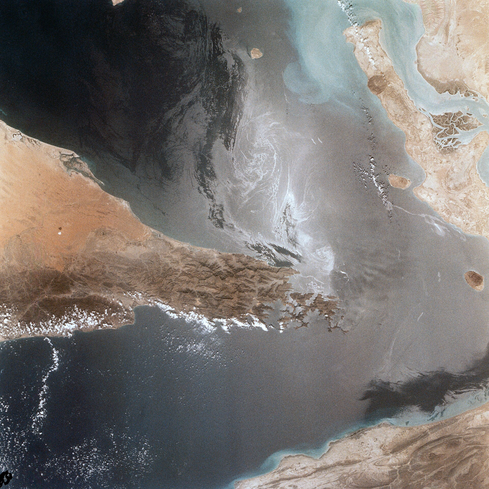

Live investigation Tuesday, August 25 Verified today
Why is there war with Iran?
The fighting is happening now. To understand it you have to go back further than the nuclear program.
Start investigation
Today’s headline
Washington opens an economic front as the last ceasefire deadline passes
01
The sixty-day settlement window agreed in June expired on August 17 with no agreement reached.
CFR02
The US Treasury announced secondary sanctions on foreign firms still trading with Iran.
CNN · Aug 2403
Iran threatened to seize vessels and shut the strait completely if neighbours help enforce them.
CNBC · Aug 24Reverse History
Today digging backward
20%
Shipping through the Strait of Hormuz
As a share of the pre-war average. The channel is 21 miles wide at its narrowest, and Iran controls the northern shore.
Reported by CNBC, August 24, 2026.